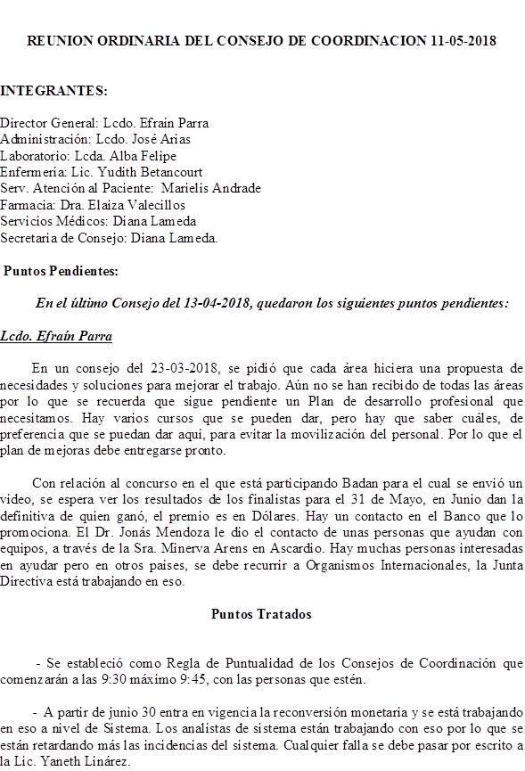

- A partir del 23 de abril de 2018, comenzará a trabajar en la fundación el Oncólogo Luis Pérez, los lunes en la tarde.
- Se suspendió el servicio de colocación de MAPA porque el sr. Miguel pide que lo llamen si hay pacientes y su obligación es que venga. Se planea colocarlos por HIGEA.
- Para la primera semana de Mayo se debe mudar el área de Quimioterapia. Se van a prender los extractores para que el olor a pintura salga pronto.
- Enfermeria:
- La Lic. Yudith comenta que el Dr. Luis Pérez es un buen médico y que ya tiene muchos pacientes. También comenta que el horario de las citas debe solucionarse porque a los pacientes se les cita a una hora y cuando llegan los médicos ya se han ido.
- Ya se han atendido más de 70 pacientes con la colocación de Metrotexate.
- Se planteó en Consejo de Coordinación que a los suplentes se les reducía el 5% de sueldo y se acordó el 35% por lo que ahora nadie quiere venir a trabajar con ese sueldo. Las personas ya no quieren hacer suplencias. El Lic. Efraín dice que eso se va a modificar, que esas condiciones se van a quitar, que cada departamento se organice para hacer las suplencias. No se deben buscar suplentes sino que se resuelva entre todos. Pero que si se tiene que buscar suplentes quitar ese porcentaje.
- La titular de representación en el Consejo es María José, pero en vista de su renuncia pasa a ser Elizeth y Mayeli es la suplente. Cuando Elizeth venga en la mañana se debe buscar una suplente.
Imágenes:
- El técnico Alí Escalona, trabajó hasta el 28 de Marzo. La Técnico Johadira Segarra pasó a hacer Densitometría y tomografías. Y se contrató a Jennifer Rosendo para Densitometrías. La próxima semana se arreglará la falla de la mesa del equipo y se comenzarán a hacer más estudios. Los contrastados se seguirán haciendo por Higea.
Administración:
- El Sr. Iván Pineda, sale de vacaciones el 02-05-2018 y le hará la suplencia Desiree Ojeda.
- Se hace un llamado al personal de que tengan sentido de pertenencia y que quieran la Fundación.
- Se plantea visualizar las carteras y bolsos al salir y visualizar las cámaras para verificar que llevan los que entran y salen.
- Hay que postular a las personas para el Comité de Higiene y Seguridad Industrial. Se reciben postulaciones.
- Todas las fallas del sistema deben ser reportadas a la Lic. Yaneth Linárez.
Farmacia:
. - El personal considera que el timbre no funciona porque les quita mucho tiempo y tener la puerta cerrada es un inconveniente por la cantidad de personas que entra y sale. El Lic. Efraín le respondió que la idea era darle seguridad a la farmacia por lo que dben acostumbrarse a usarlo por prevención.
- La Dra. Elaiza pide que aparezca el listado de existencia en farmacia cuando facturen. Que el sistema está muy lento y que se están duplicando informaciones. El Lic. Efraín acotó que es un sistema hospitalario que para adaptarlo a las necesidades de la Fundación Badán tuvieron que agregarle GP, Caja, Farmacia y Laboratorio, por lo que aún hay muchas incidencias que no han resuelto.
- El brazo de la puerta está fallando debido a la gran cantidad de personas que entra y sale.
Atención al paciente:
- La Lic. Julia Sánchez trae la inquietud de que los pacientes se quejan del horario de atención de los médicos. Y sugiere que se les diga que deben cumplir con el horario de consulta establecido.
- El personal de Caja expuso que cuando se haga una solicitud de factura la administración debe avisarles que está autorizada.
- El personal de Recepción pide que le arreglen el límite de pacientes a la Dra. Deysy porque le están saliendo muchos pacientes anotados en sistema. Y notifican que el horario del Dr. Ballester aún no ha sido arreglado. También solicitan que por favor fumiguen la recepción porque hay demasiadas moscas y zancudos. El Lic. Efraín dijo que hablará con el personal de Sanidad a ver si ellos pueden fumigar. Se probará con algo que sea repelente.
- El Sr. José Luis, de la Portería solicita que se hable con los médicos para que informen a los pacientes que no deben esperar en los pasillos y que se ponga cerradura a todas las puertas para mantenerlas cerradas, en vista del robo de la batería de la sala de máquinas ocurrida hace pocos días, por lo que se hablará con la Señora María Montes para que entregue el material de limpieza al personal de mantenimiento y que solo ella pueda bajar.
- Se presume que quien se robó la batería es alguien que conoce la fundación y el horario de descanso de cada quien. Para restringir un poco el paso hacia el sótano, el personal de mantenimiento debe comer en el comedor y el almacenista José Arias debe
atender a los proveedores arriba, no llevarlos al sótano. La Dra. Elaiza sugiere que el almacén tenga una oficina arriba y el Lic. Efraín dijo que de Sanidad vinieron y aprobaron que el almacén funcionara en el sótano y que además está en proyecto la construcción de un tercer piso por lo que cree que se puede hacer una oficina para el almacén.
Laboratorio:
- La Lic. Briggi habló con la Lic. Yaneth Linárez de que los precios de los exámenes foráneos aumentarán cada semana, porque el Laboratorio Blau dijo que la situación obliga a eso. Y también pidió discreción a las recepcionistas a la hora de dar precios porque no es culpa de la Fundación el aumento.
- Ya se están haciendo exámenes que hace tiempo no se hacían, ya la química está completa y hay electrolitos. Están funcionando en un 90%, porque hay reactivos que no se consiguen como el de Transaminasas.
- Están usando poco agua destilada.
DIANA LAMEDA
SECRETARIA